|
|
| cephalopods text index | photo index |
| Phylum Mollusca > Class Cephalopoda > Family Octopodidae |
| Reef
octopus awaiting identification* Family Octopodidae updated May 2020 Where seen? This active and colourful animal is the most commonly seen octopus near our reefs and coral rubble areas. It is frequently encountered on many of our Southern shores and it is a rare night visit where one is not seen in a suitable habitat. It is more active at night. Features: Head about 5-8cm long, arms may be 15-30cm long. Arms tapering. Webbing extends to about half the arm's length. It can change colours and the texture of the skin. Mimicking other sea creatures? Some octopuses on the Northern shores were seen with their arms arranged to form a flat profile as they moved over the sand. Were they mimicking a flatfish? Or is this just a convenient way to move when you have that many arms? There's a lot we have yet to learn about these amazing animals. |
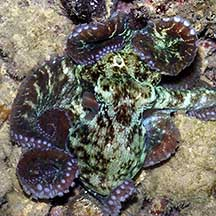 Raffles Lighthouse, May 04 |
 This octopus changed both its colour... Sisters Island, Jul 04 |
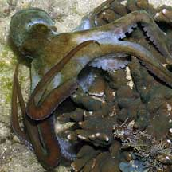 ... and texture! |
 Using jet propulsion to move. Cyrene Reef, Oct 08 |
 Using web as a net to trap prey. Pulau Hantu, Aug 04 |
 Web spreading out along the sides of the tentacle. Labrador, May 06 |
 Inking - octopus is perfectly camouflaged with the sand. Cyrene, Mar 12 |
 The ink coagulated a distance away, distracting from the octopus. Cyrene, Mar 12 |
 A pair of mating octopuses, one pale and the other dark. Sentosa, Jul 05 |
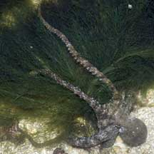 The arms can stretch out to great length! Sentosa, Jan 05 |
|
 Tentacles arranged to form a flat profile. Mimicking a flatfish? Chek Jawa, Aug 05 |
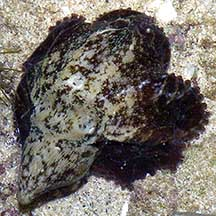 Head formed into a cone shape. Mimicking a snail? Sentosa, May 04 |
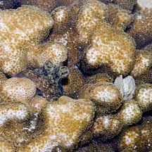 Hidden among bumpy hard coral. Sisters Island, May 07 |
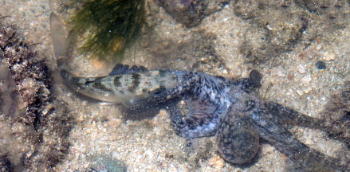 Grabbing a Mojarra fish larger than itself! Small Sisters Island, Oct 25 Photo shared by Yan Le Su on facebook. |
*Species are difficult to positively identify without close examination.
On this website, they are grouped by external features for convenience of display.
| Reef octopuses on Singapore shores |
On wildsingapore
flickr
|
| Other sightings on Singapore shores |
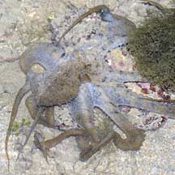 Pulau Pawai, Dec 09 |
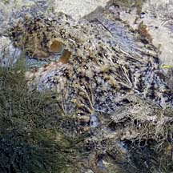 Pulau Pawai, Dec 09 |
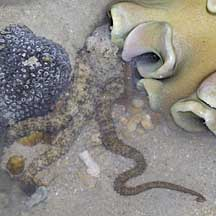 Pulau Sudong, Dec 09 |
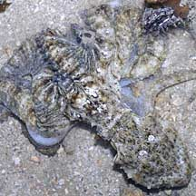 Pulau Senang, Jun 10 |
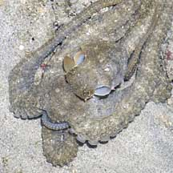 Pulau Senang, Aug 10 |
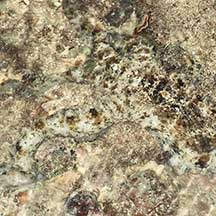 Pulau Biola, Jan 22 Photo shared by Toh Chay Hoon on facebook. |
||

|

|
| shared by Neo Mei Lin on her blog |
| Filmed on Pulau
Hantu, 2008 see how it changes colours! octopus surprise @ hantu from SgBeachBum on Vimeo. |
| Filmed on
Terumbu Raya on 9 Feb 09 |
| Filmed on
Pulau Hantu, Jan 11 octopus escape @ Pulau Hantu 22Jan2011 from SgBeachBum on Vimeo. |